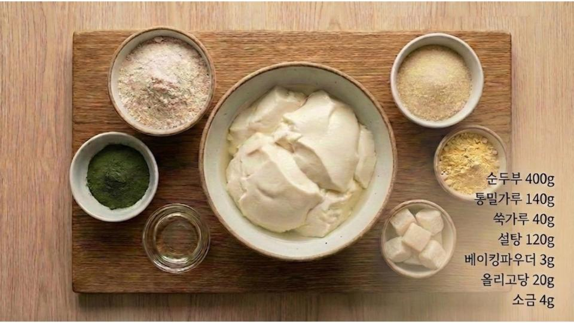
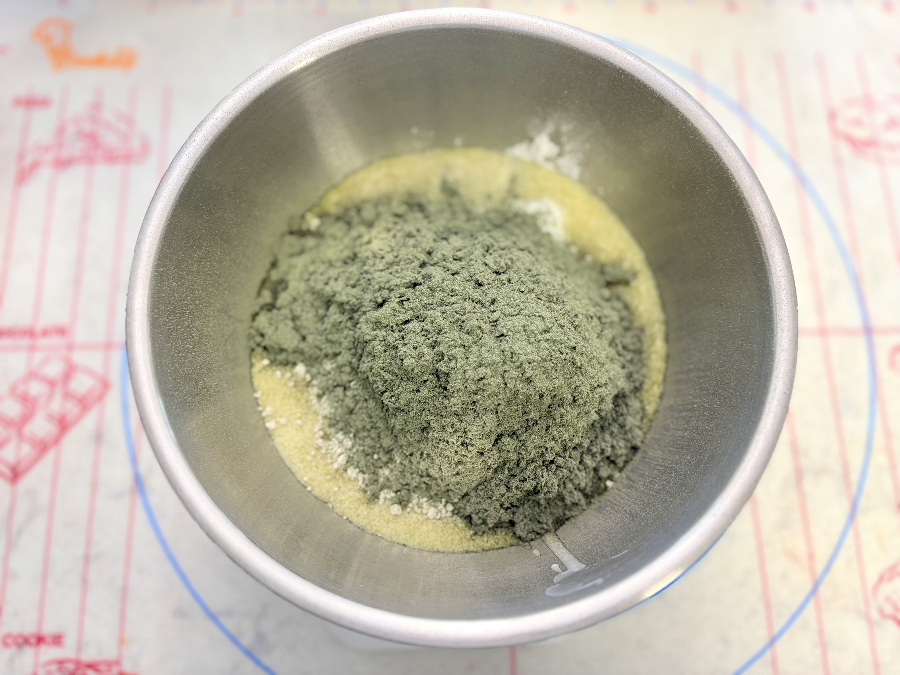
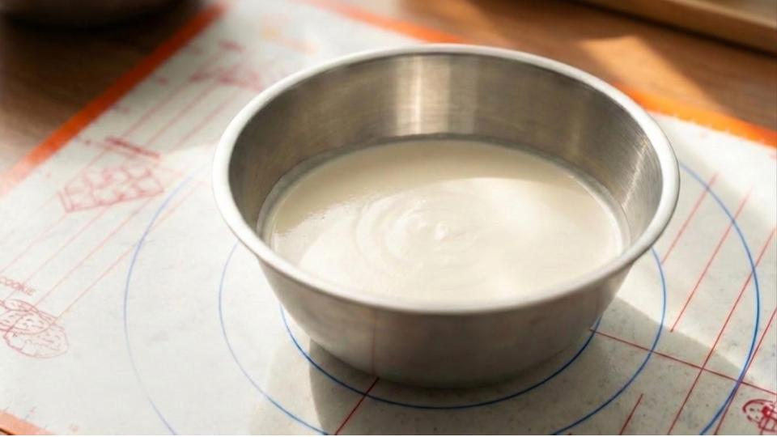
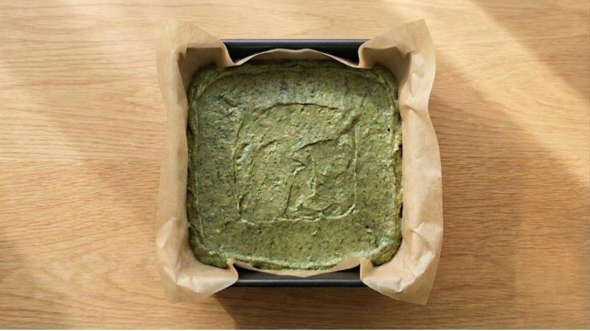
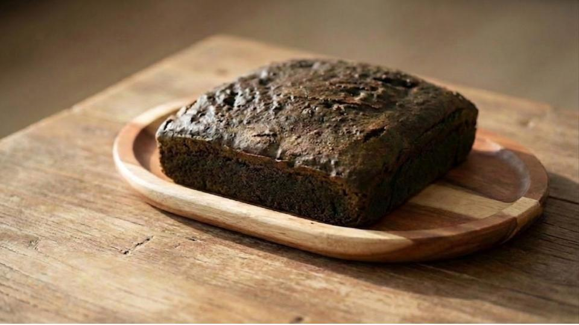
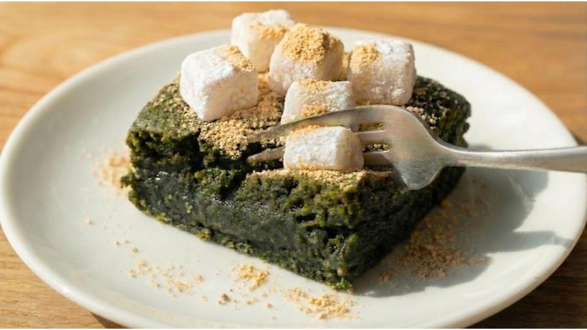

Step 01.
정직한 재료의 준비
순두부, 쑥가루, 그리고 비법의 배합이 시작되는 시간입니다.
가장 좋은 원재료를 엄선하여 프로젝트 두부만의 깊은 맛을 준비합니다.

Step 02.
시트 반죽의 조화
순두부와 설탕, 올리고당을 고르게 섞어 매끄러운 베이스를 만든 뒤 가루류를 넣고 섞어줍니다.
재료들이 조화롭게 어우러져 쑥 찰떡브라우니만의 묵직하면서도 쫀득한 식감을 완성합니다.

Step 03.
순두부 크림의 유화
순두부 크림이 다른 재료와 완벽하게 섞이는 결정적인 공정입니다.
매끄러운 유화를 통해 브라우니의 묵직하면서도 부드러운 농도를 완성합니다.

Step 04.
골든 베이킹
오븐 온도 160도에서 30분에서 35분간 신중하게 굽습니다.
시간과 온도의 정성이 모여 속까지 쫀득한 브라우니가 탄생합니다.

Step 05.
완성을 위한 기다림
냉장에서 3시간 이상 충분한 숙성을 거칩니다.
기다림 끝에 비로소 쑥의 진한 풍미가 반죽 속에 깊게 뿌리내립니다.
